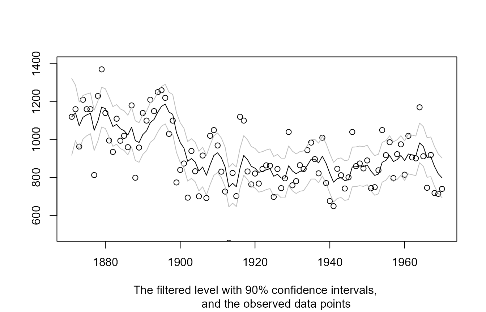
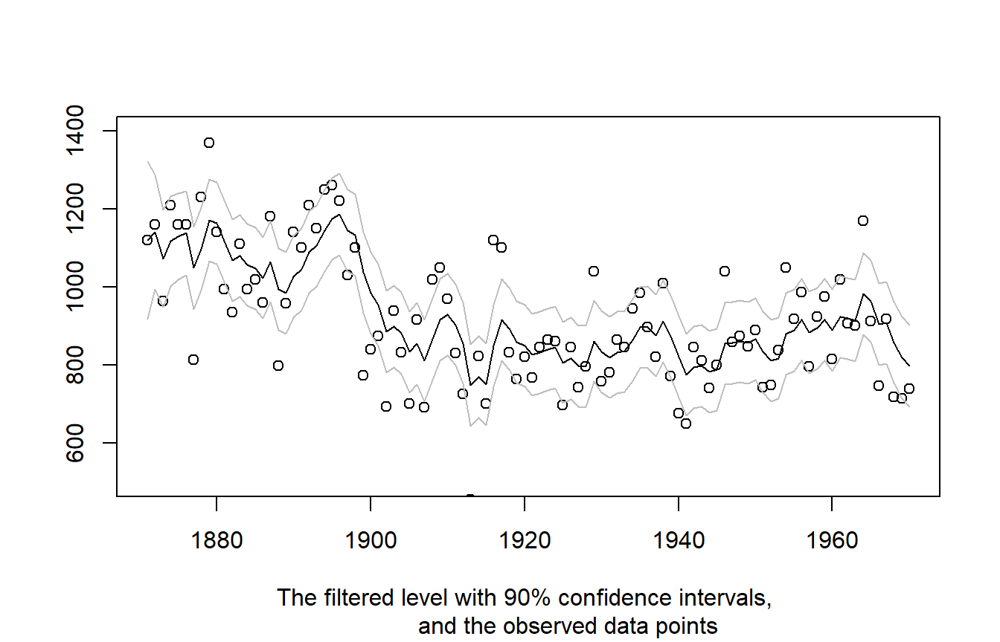

This document provides a brief introduction to using the statespacer package. It does so by showcasing the estimation of a Local Level model on the well known Nile data. See ?Nile for more information about this dataset.
To start, let’s first introduce the Local Level model. Mathematically, this model can be represented as follows:
\[ \begin{aligned} y_t ~ &= ~ \mu_t ~ + ~ \varepsilon_t, ~~~~~~ \varepsilon_t ~ \sim ~ N(0, ~ \sigma_\varepsilon^2), \\ \mu_{t+1} ~ &= ~ \mu_t ~ + ~ \eta_t, ~~~~~~ \eta_t ~ \sim ~ N(0, ~ \sigma_\eta^2), \end{aligned} \]
where \(y_t\) is the dependent variable at time \(t\), \(\mu_t\) is the unobserved level at time \(t\), and \(\varepsilon_t\) and \(\eta_t\) are disturbances. This model has two parameters, \(\sigma_\varepsilon^2\) and \(\sigma_\eta^2\) that will be estimated by maximising the loglikelihood. In addition, the level \(\mu_t\) is a state parameter that will be estimated by employing the Kalman Filter. For extensive details about the algorithms employed, see Durbin and Koopman (2012).
Estimating this model using the statespacer package is simple. First, we load the data and extract the dependent variable. The dependent variable needs to be specified as a matrix, with each column being one of the dependents. In this case, we just have one column, as the Nile data comprises a univariate series.
# Load statespacer library(statespacer) #> Welcome to the statespacer package! # Load the dataset library(datasets) y <- matrix(Nile)
To fit a local level model, we simply call the StateSpaceFit() function. See ?StateSpaceFit for further details.
fit <- StateSpaceFit(y = y, local_level_ind = TRUE, initial = 10) #> Warning in StateSpaceFit(y = y, local_level_ind = TRUE, initial = 10): Number of #> initial parameters is less than the required amount of parameters (2), recycling #> the initial parameters the required amount of times. #> Starting the optimisation procedure at: 2020-04-25 02:37:44 #> Parameter scaling:[1] 1 1 #> initial value 11.296135 #> iter 10 value 6.349232 #> final value 6.334646 #> converged #> Finished the optimisation procedure at: 2020-04-25 02:37:44 #> Time difference of 0.569255113601685 secs
We get a warning message about the number of initial parameters, as we didn’t specify enough of them. We needed 2 initial parameters, but specified only 1. This is okay, as the function just replicates the specified parameters the required amount of times. This way, we don’t need to worry about how many parameters are needed. We could also specify too many initial parameters, in which case only the first few are used. This is particularly useful when we want random initial parameters. One could just simply specify initial = rnorm(1000), and not have to worry about if enough parameters were supplied.
Now, let’s check the estimated values of \(\sigma_\varepsilon^2\) and \(\sigma_\eta^2\).
c(fit$system_matrices$H$H, fit$system_matrices$Q$level) #> [1] 15097.703 1469.643
Note that we use the notation used in Durbin and Koopman (2012) for the system matrices. \(H\) being the system matrix for the variance - covariance matrix of the observation equation, and \(Q\) being the system matrix for the variance - covariance matrix of the state equation.
Checking out the estimated level is easy as well. The filtered level:
plot(1871:1970, fit$function_call$y, type = 'p', ylim = c(500, 1400), xlab = NA, ylab = NA, sub = "The filtered level with 90% confidence intervals, and the observed data points" ) lines(1871:1970, fit$filtered$level, type = 'l') lines(1871:1970, fit$filtered$level + qnorm(0.95) * sqrt(fit$filtered$P[1,1,]), type = 'l', col = 'gray' ) lines(1871:1970, fit$filtered$level - qnorm(0.95) * sqrt(fit$filtered$P[1,1,]), type = 'l', col = 'gray' )

And the smoothed level:
plot(1871:1970, fit$function_call$y, type = 'p', ylim = c(500, 1400), xlab = NA, ylab = NA, sub = "The smoothed level with 90% confidence intervals, and the observed data points") lines(1871:1970, fit$smoothed$level, type='l') lines(1871:1970, fit$smoothed$level + qnorm(0.95) * sqrt(fit$smoothed$V[1,1,]), type = 'l', col = 'gray' ) lines(1871:1970, fit$smoothed$level - qnorm(0.95) * sqrt(fit$smoothed$V[1,1,]), type = 'l', col = 'gray' )

The object returned by StateSpaceFit() exhibits many other useful items. For more information about these items, please see vignette("dictionary", "statespacer"). For more exhibitions of the statespacer package, please see the other tutorials on https://DylanB95.github.io/statespacer.